Python - 隔離開發環境的利器，安裝虛擬環境工具 virtualenv
Posted on Thu 07 March 2019 in Python
前言
在開發 Python 的程式時，時不時就會透過 pip 從 PyPI 上安許多的套件來 import 使用，但是因為 Python 是裝在整個電腦的系統環境的，所以當我們之後寫的專案變多，每個不同的專案都因為有各自的需要 pip install 了不同的套件，最後整個 Python 的系統環境所安裝的套件就會非常多且雜亂！ 那麼要如何讓每個專案安裝的套件都只有自己的專案擁有，且不會弄亂系統的 Python 環境呢？ 這時候就需要虛擬環境了！
虛擬環境介紹
虛擬環境的目的使我們可以依據我們每個專案為一個單位，建立出不同虛擬的 Python 環境，來隔離系統的主 Python 環境以及其他專案的 Python 環境。因此當我們在開發不同的專案時，只要進入每個專案所屬的虛擬環境中，接下來所有安裝的插件都會只裝在這個環境中並且被作用，下圖為示意圖：
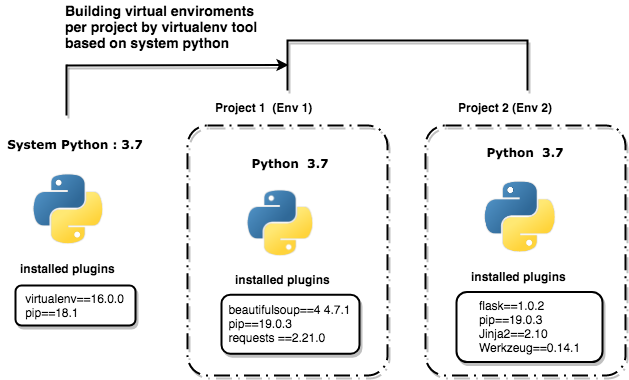
我的主系統 Python 環境中只有安裝 pip 與 virtualenv 這個虛擬環境工具套件，而透過 virtualenv 所分別在這三個專案產生的 env1, env2, env3 除了都有各自獨立的 Python 環境與各自的 pip 套件外，也都安裝彼此所屬專案在開發上所需要的插件。
另外若是你的電腦主環境有兩種不同的 Python 版本，例如 Python 2.7 與 Python 3.7，那麼在建立虛擬環境時，還可以指定要產生的虛擬環境要以哪個 Python 版本為基底哦！
另外虛擬環境這個概念不是只有在 Python 中才有，每個程式語言都有類似或自己的虛擬環境工具，而在 Python 中目前最熱門的就是 virtualenv 以及之後會介紹在 virtualenv 之後新推出的 pipenv。
安裝與使用 virtualenv
首先透過 Python 內建的 pip 套件指令下 pip install 來安裝 virtualenv 套件：
$> pip install virtualenv
安裝完後要怎麼使用呢？ 以下一個例子，我的專案是一個爬蟲的專案叫 parser，我會在這個專案中安裝 requests, beautifulsoup4 這兩個套件，那麼首先進入到你要開發的專案目錄下。
~/> mkdir parser
~/> cd parser
再透過 virtualenv 指令來建立一個存放 Python 虛擬環境的目錄，例如下面我透過 virtualenv 建立了一個 venv 的目錄，那麼 virtualenv 就會在這個目錄中把系統的 Python 且是乾淨沒有安裝其他套件的 Python 環境複製裝進去，如此這個虛擬環境就誕生了：
parser/> virtualenv venv # 這個 venv 是用來存放虛擬環境建立的 Python 虛擬環境的目錄
parser/> ls
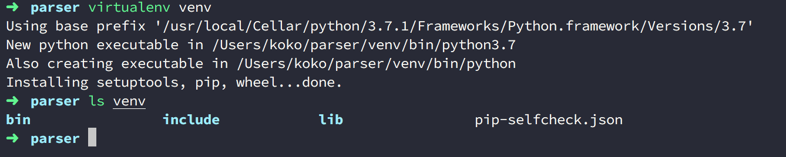
你會看到在 venv 中是安裝 Python 時產生的目錄與檔案。
使用 virtualenv
建立好 parser 專用的虛擬環境後，此時先不要太快直接透過 pip 安裝套件，因為我們只是建立好環境，但我們「還未進入」到這個虛擬環境中，因此若此時直接安裝，還是會以系統中使用 Python 的 pip 插件安裝下去。我們要先進入到虛擬環境中，也就是 venv 所建立的 Python 下，再用虛擬環境中內建的 pip 安裝套件，這些套件才會被裝在虛擬環境下。
parser/> source/bin/activate
(venv)parser/> pip list
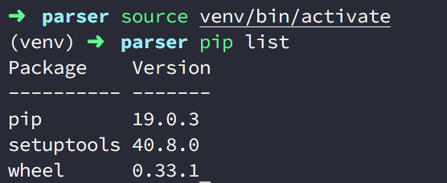
如上圖你會看到這個 pip list 出來的套件都是一開始安裝 Python 時最乾淨的環境，即便你作業系統中安裝的 Python 已經有裝了其他套件，在這裡都會以最乾淨的方式呈現，因為 virtualenv 只會複製一份 Python 核心，不會連作業系統中的 Python 所安裝的套件也一併抓過來，此時我們可以透過 python --version 來看看 Python 的路徑以及版本，以下我的 Python 是安裝 3.7.1 版本的，此時透過進入 Python 環境下，透過 sys.path 就可以看到來源是 venv 中：
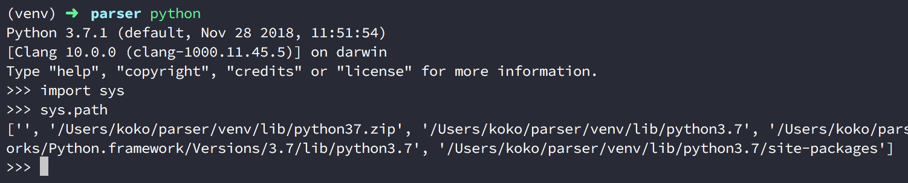
接著回過頭來，我們來安裝套件 requests 與 beautifulsoup4：
(venv)parser/> pip install requests
(venv)parser/> pip install beautifulsoup4
(venv)parser/> pip list
Package Version
-------------- ----------
beautifulsoup4 4.7.1
certifi 2018.11.29
chardet 3.0.4
idna 2.8
pip 19.0.3
requests 2.21.0
setuptools 40.8.0
soupsieve 1.8
urllib3 1.24.1
wheel 0.33.1
大功告成囉！對了對了如果我們使用完專案想要離開怎麼辦？那麼我們只需要透過 deactivate 退出虛擬環境就好囉。
(venv)parser/> deactivate
parser/> pip list
退出後你就會看到 (venv) 的標示不存在了，就是退出虛擬環境成功，此時你可以在透過 pip list 看看，就會發現虛擬環境中安裝的套件不在了：
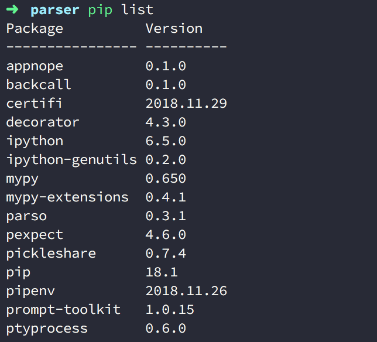
但是因為他好好的放在 venv 目錄下，所以下次要使用只要再透過 source venv/bin/activate 進入即可囉！
另外若是你今天在使用虛擬環境時完髒了，要刪除要怎麼做呢？ 我們只要先用 deactivate 退出虛擬環境後，在做 rm -rf 把虛擬環境的目錄刪掉就好，豈不是很容易？
(venv)parser/> deactivate
parser/> rm -rf venv
紀錄專案在 virtualenv 中所安裝的所有套件
安裝了 Python 的套件在虛擬環境中雖然很好，但是如果要做版本控制放到 Github, Bitbucket, GitLab 上，又或是專案的檔案要攜帶著走、分享給別人，那麼這些安裝好的環境要如何也攜帶走呢？ 可能你會說，那我們把剛剛建立放置虛擬環境的目錄 venv 也一起丟到版本控管空間呀，轉移專案目錄時也是一起帶著走就好了，但是這是不行的，因為兩個原因：
-
虛擬環境目錄認「絕對路徑」：換句話說，即便你有一起把
venv帶著走，但若你的專案目錄改名了、把自己的目錄檔案放到別的位置下或複製傳給別人，都會因為絕對位置跑掉，導致下次再透過source進入虛擬環境時找不到路徑而失敗！ -
虛擬環境目錄檔案太大：虛擬環境目錄因為要保存隔離 Python 的整個核心檔案以及未來安裝的 Python 套件，會導致目錄的檔案越來越多，所以一般來說就算路徑都不改，我們也不會攜帶走或丟到版本控管空間，因為會很大很肥。
那麼不帶著虛擬環境的目錄走，要怎麼保有這些安裝套件的紀錄呢？ 這裡就要仰賴到 pip freeze 這個指令了！ 透過 pip freeze > 保存的檔名 來建立一份所有該虛擬環境所安裝的套件：
(venv)parser/> pip freeze > requirements.txt
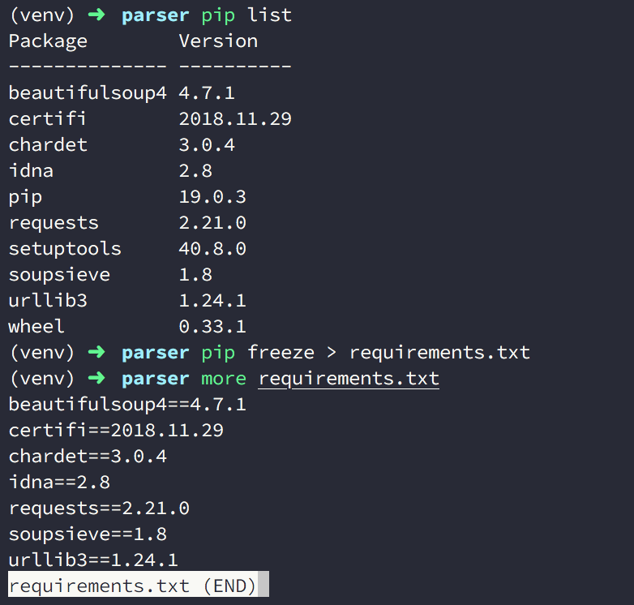
如上圖，會建立了 requriements.txt 檔案，這個檔名可以隨意命名，不過一般在使用 virtualenv 中，使用 requriements.txt 已經變成 Python 的一種 Convention ，所以若是去瀏覽大多是 Github 的 Reposiotry 都會看到。
當我們產生了 requriements.txt 後，專案變只要帶著這個 requriements.txt 即可，上傳版控也一樣，並可以用 .gitignore 過濾掉 venv 目錄。
使用 requirements.txt
當該專案來到新的環境下或從 Github 上 Clone 下來時，要使用虛擬環境並再次安裝套件的話，就只要再次把虛擬環境的目錄建立，進入後，透過以下指令，就可以還原該專案原先所以用的 Python 套件囉，以下再次以乾淨的 parser 專案為例：
# 假設目前在新的環境下，先建立虛擬環境，在安裝套件
parser/> virtualenv venv
parser/> source venv/bin/activate
(venv)parser/> pip install -r requirements.txt
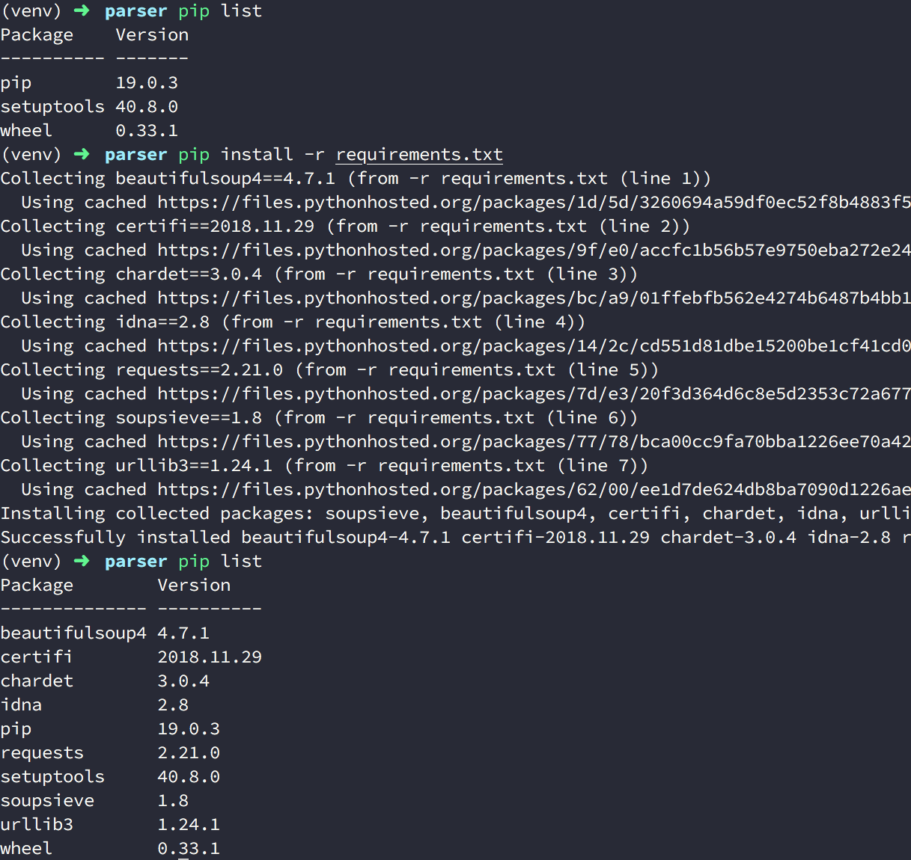
如上圖，再次安裝 Python 套件完成囉。
指定 Python 版本的虛擬環境
如果今天你的作業系統中有多個 Python 版本，例如我一開頭提到的 Python 2.7 與 Python 3.7，那麼在建立虛擬環境時，還可以指定要產生的虛擬環境要以哪個 Python 版本為基底哦！ 以下接著介紹如何設定：
首先先看到一下範例：以下是我的 Python 2.7.15 版本以及 Python 3.7.1：
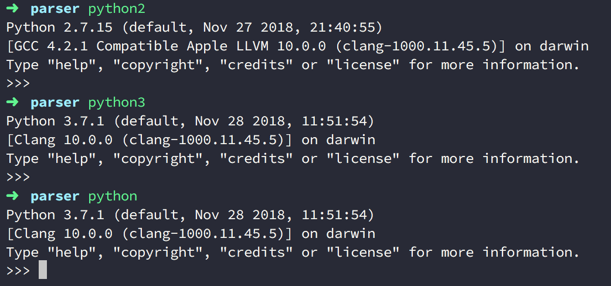
在上述因為我預設的優先讀取版本是 Python 3.7.1 ，所以輸入 python 會是呈現 3.7.1 版本（因此我的系統下 pip 時出來的也會是以放在預設的 Python 3.7.1 中套件)
除此之外當我在創建虛擬環境時，也因此我的預設 Python 環境會是 3.7.1，例如先前的 partser 專案。
那麼今天如果要指定虛擬環境中要用的 Python 版本要如何設定？ 很容易地只要透過 -p 參數後面帶入你指定的 Python 執行檔所在的路徑就好，不過因為路徑往往不好記。
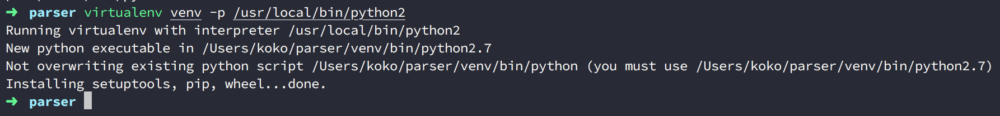
所以只要以指令代替即可，例如因為我的環境只有 2.7.15 與 3.7.1 ，因此執行的 Python 指令就只有 python2 與 python3 而已，因此我要指定 Python 2.7.15
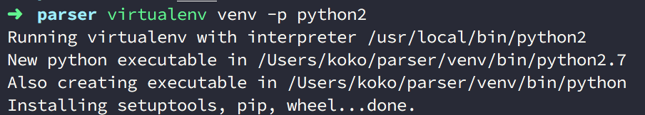
最後以 parser 專案以及另外一個新建的 flask-sample 專案作為作為不同專案各有自己的虛擬環境的例子，如下 parser 以 python 2.7.15 為環境安裝了 requests 與 beautifulsoup4 ；而 flask-sample 以 Python 3.7.1 為環境並安裝了 flask，如下圖：
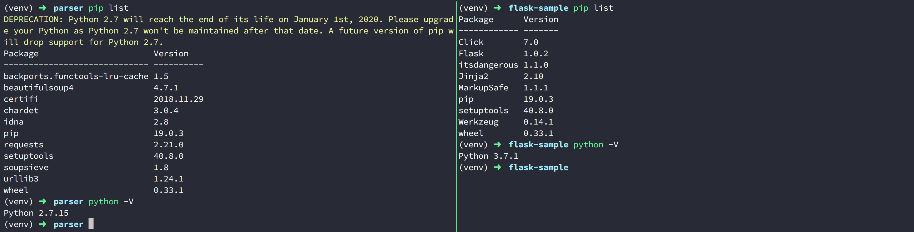